Un atelier pour toucher le cerveau du bout des doigts — sans toucher à un seul animal.
REMPLACER — French for "Replace" — is the name of this workshop and a direct reference to the first of the 3Rs in animal research ethics.
A hands-on workshop to explore the brain — without touching a single animal.
Tout a été conçu en interne : le moule 3D modélisé d'après une anatomie réelle de souris, les cerveaux en agarose fabriqués à la main, et la version portable pour les événements hors les murs.
Everything was designed in-house: the 3D mould modelled from real mouse anatomy, the hand-made agarose brains, and the portable version for off-site events.
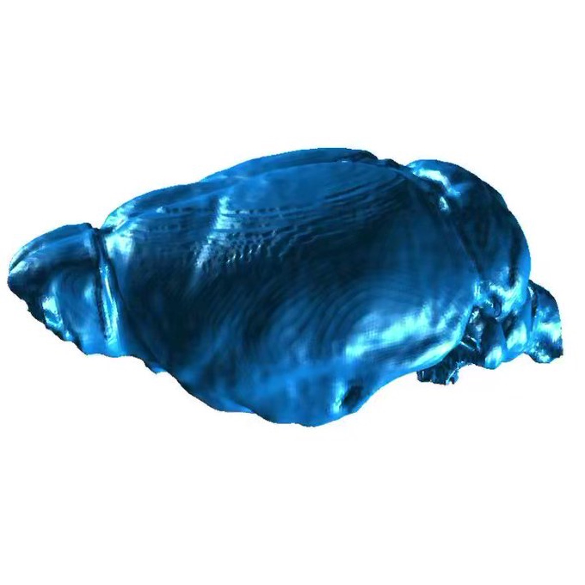
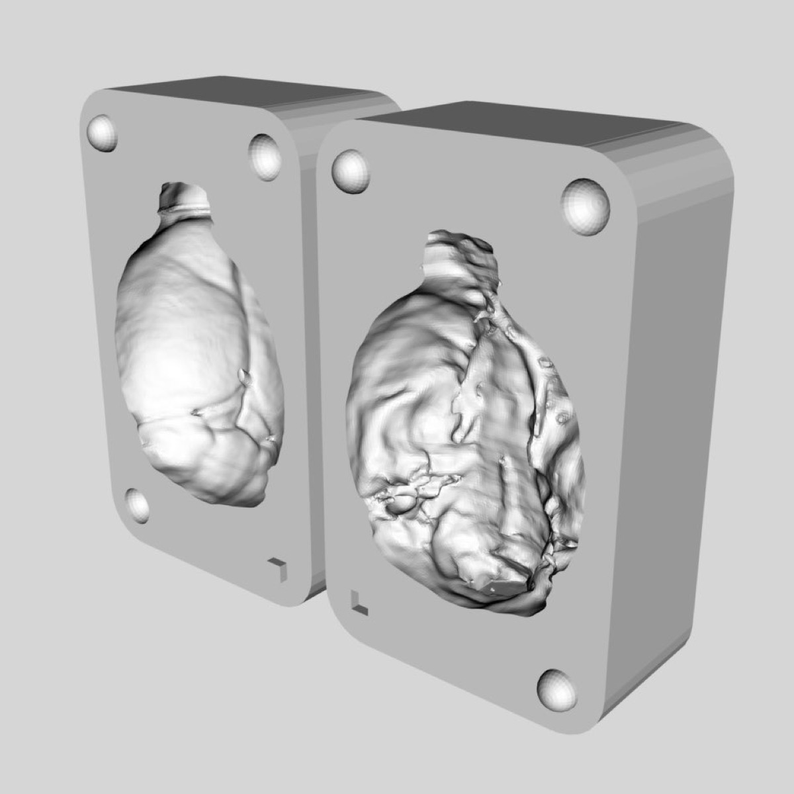
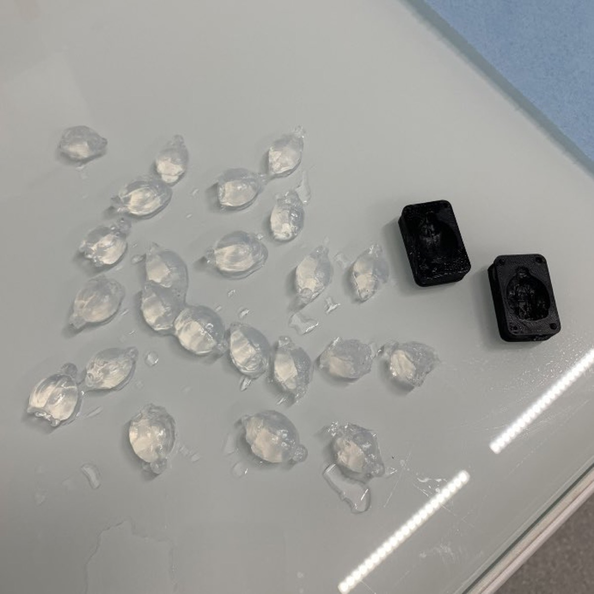
Comment le cerveau contrôle-t-il la prise alimentaire ? Quels outils utilisons-nous pour comprendre l'obésité ? Le cadre scientifique est posé, la curiosité éveillée.
How does the brain control food intake? What tools do we use to study obesity? The scientific context is set, curiosity awakened.
Chacun s'approprie le cadre stéréotaxique, positionne sa canule et réalise sa propre injection. Un petit 1/100ème de mm pour le chercheur, de grandes avancées pour nos patients.
Each participant handles the stereotaxic frame, positions the cannula and performs their own injection. A tiny 1/100th of a mm for the researcher, huge advances for patients.
Maintenant les gens ont des choses à dire. Ils ont manipulé, ils ont vu. Le cadre réglementaire est présenté et le débat s'ouvre sur des bases solides et factuelles.
Now people have things to say. They've experienced it. The regulatory framework is presented and the debate opens on solid, factual grounds.
« Si l'on considérait une théorie comme parfaite et si l'on cessait de la vérifier par l'expérience scientifique, elle deviendrait une doctrine. »
L'atelier est lui-même une démonstration vivante du premier R. Mais il n'occulte pas les limites : certaines questions biologiques ne peuvent encore se résoudre qu'in vivo. Remplacer quand on peut, réduire et raffiner quand on ne peut pas.
The workshop is itself a living demonstration of the first R. But it doesn't hide the limits: some biological questions can only be resolved in vivo. Replace when possible, reduce and refine when not.
Source : FC3R — www.fc3r.com / Russel & Burch 1959, loi européenne 2010
Source: FC3R — www.fc3r.com / Russel & Burch 1959, EU law 2010
Pendant des décennies, les médecins n'avaient quasiment rien à proposer contre l'obésité sévère. Les médicaments ? Une succession d'espoirs déçus : la fenfluramine retirée pour des lésions valvulaires cardiaques, la sibutramine pour ses effets cardiovasculaires, le rimonabant — antagoniste CB1 du système endocannabinoïde, une piste hypothalamique directe — retiré dès 2008 pour risque de dépression et d'idées suicidaires. Quant à l'orlistat, malgré une meilleure tolérance, il n'induisait qu'une perte de poids modeste.
For decades, physicians had almost nothing to offer against severe obesity. Drugs? A string of disappointments: fenfluramine withdrawn for heart valve damage, sibutramine for cardiovascular risks, rimonabant — a CB1 endocannabinoid system antagonist, a direct hypothalamic target — withdrawn as early as 2008 for depression and suicidal ideation risk. And orlistat, though better tolerated, only produced modest weight loss.
La chirurgie bariatrique a comblé ce vide pour les cas les plus sévères, avec une efficacité réelle. Mais son accès reste très limité : moins de 1 % des patients éligibles sont opérés. Coût, risques, réticences — la chirurgie n'est pas une réponse à l'échelle de l'épidémie.
Bariatric surgery filled the gap for the most severe cases, with real effectiveness. But its access remains very limited: fewer than 1% of eligible patients undergo surgery. Cost, risk, reluctance — surgery was never a population-scale solution.
ASMBS 2026 — Moins de 1% des patients cliniquement éligibles à la chirurgie bariatrique sont opérés chaque année aux États-Unis (270 089 chirurgies en 2023 pour >25 millions de patients éligibles).
ASMBS 2026 — Fewer than 1% of clinically eligible patients undergo bariatric surgery each year in the US (270,089 surgeries in 2023 for >25 million eligible patients).
C'est le préjugé le plus répandu — et le moins fondé. L'obésité n'est pas un défaut de caractère : c'est une maladie à base biologique. Il est scientifiquement indéfendable d'expliquer l'épidémie mondiale par une chute soudaine de la volonté à partir des années 1970.
It's the most common prejudice — and the least founded. Obesity is not a character flaw: it is a biologically based disease. The idea that a global drop in willpower since the 1970s could explain the epidemic is scientifically indefensible.
Le poids est régulé par le cerveau — l'hypothalamus intègre en permanence des signaux hormonaux (leptine, ghréline, insuline) et défend activement un point d'équilibre contre toute perte de poids. L'étude STILTS (Cambridge, 2019) a comparé l'ADN de 14 000 personnes — minces, poids normal, obèses sévères : les personnes minces ne l'étaient pas par vertu, mais parce qu'elles portaient moins de variants génétiques favorisant la prise de poids.
Body weight is regulated by the brain — the hypothalamus continuously integrates hormonal signals (leptin, ghrelin, insulin) and actively defends a set point against weight loss. The STILTS study (Cambridge, 2019) compared the DNA of 14,000 people — thin, normal weight, severely obese: thin people were not thin through virtue, but because they carried fewer genetic variants predisposing to weight gain.
Keogh, Farooqi et al., PLOS Genetics 2019 / Volkow et al., Trends Cogn Sci 2011 / Blüher, Diabetes Obes Metab 2025
Keogh, Farooqi et al., PLOS Genetics 2019 / Volkow et al., Trends Cogn Sci 2011 / Blüher, Diabetes Obes Metab 2025
« Si vous êtes mince, souvenez-vous : vous n'êtes pas moralement supérieur — vous avez simplement eu de la chance. »
"If you are thin, remember: you are not morally superior — just lucky."
Les agonistes du GLP-1 — Ozempic, Wegovy — sont issus de 50 ans de recherche fondamentale menée en grande partie sur des rongeurs. Sans ces décennies de travail sur des modèles animaux, pas de perspective de traitement pour le milliard de personnes obèses dans le monde.
GLP-1 agonists — Ozempic, Wegovy — are the result of 50 years of fundamental research conducted largely on rodents. Without these decades of animal model work, no prospect of treatment for the billion people living with obesity worldwide.
Des médicaments qui n'en sont qu'à leurs débuts : la recherche sur les GLP-1 ouvre aujourd'hui des pistes pour de nouvelles molécules, de nouvelles voies d'administration, de nouvelles combinaisons thérapeutiques.
These treatments are just the beginning: GLP-1 research is now opening paths to new molecules, new delivery routes, new therapeutic combinations.
World Obesity 2024 / NCD-RisC, The Lancet 2024
… au-delà de leurs bénéfices médicaux, ces traitements pourraient avoir un impact indirect sur les animaux d'élevage et les émissions de CO₂ liées à l'alimentation.
… these drugs could also potentially reduce the number of farm animals and food-related CO₂ emissions.
50 ans de recherche animale pour développer Ozempic et Wegovy. Quel pourrait être l'impact indirect sur l'élevage et le CO₂ ? Ajustez les deux côtés de la balance — y compris la part des calories d'origine animale.
50 years of animal research to develop Ozempic and Wegovy. How many farm animals could potentially not be produced? And what's the carbon balance? Adjust both sides of the equation — including the share of calories from animal products.
ℹ️ Ce calculateur propose des estimations simplifiées à visée pédagogique, construites à partir de données publiques et d'hypothèses définies par les curseurs ci-dessous. Il ne s'agit pas d'une publication scientifique ni d'un avis médical, mais d'un outil de réflexion et de discussion.
ℹ️ This calculator provides simplified, illustrative estimates built from public data and the assumptions defined by the sliders below. It is not a peer-reviewed publication or medical advice, but a tool for reflection and discussion.
Ajustez les deux côtés, coûts R&D et bénéfices, pour explorer tous les scénarios Adjust both sides, R&D costs and benefits, to explore all scenarios
Scénarios prédéfinis Predefined scenarios
🧫 Coûts R&D 🧫 R&D Costs
🌍 Bénéfices traitement 🌍 Treatment Benefits
Animaux-équivalents Animal-equivalents Nombre d'animaux d'élevage potentiellement non produits, calculé à partir du déficit calorique induit par la molécule. C'est un ordre de grandeur exploratoire, pas une prévision. La fourchette ci-dessous reflète l'incertitude sur le mix alimentaire. Number of farm animals potentially not produced, calculated from the molecule-induced caloric deficit. This is an exploratory order of magnitude, not a forecast. The range below reflects uncertainty in dietary mix.
ordre de grandeur · selon hypothèses order of magnitude · scenario-dependent
2.9T
Ratio éthique Ethical ratio Ce ratio compare animaux de laboratoire et animaux d'élevage comme s'ils avaient la même valeur morale. C'est un choix discutable, d'autres façons de raisonner conduiraient à des conclusions différentes. This ratio compares laboratory and farm animals as if they had equal moral value. This is a debatable choice, other ways of reasoning would lead to different conclusions.
362M:1
CO₂ épargné/an CO₂ saved/year Estimation basée sur Ganatra et al. (ESC 2025), méta-analyse de 4 essais chez des patients insuffisants cardiaques sous GLP-1RA : ~695 kg CO₂eq/patient/an liés à la réduction calorique. Ce volet est méthodologiquement plus robuste que le calcul "animaux". Note : ces données portent sur des patients HFpEF ; l'extrapolation à la population générale obèse implique une incertitude supplémentaire. Estimate based on Ganatra et al. (ESC 2025), meta-analysis of 4 trials in heart failure patients on GLP-1RA: ~695 kg CO₂eq/patient/year from caloric reduction. This component is methodologically more robust than the "animals" calculation. Note: data are from HFpEF patients; extrapolation to the general obese population adds further uncertainty.
49.6M t
Payback animal Animal payback Durée nécessaire pour que le nombre d'animaux d'élevage potentiellement non produits égale le nombre d'animaux utilisés en R&D. Ex : 10 jours = après 10 jours de traitement à l'échelle mondiale, le "bilan" devient positif. Time needed for the number of farm animals potentially not produced to equal the number of animals used in R&D. E.g. 10 days = after 10 days of treatment at global scale, the "balance" turns positive.
10 j d
Payback CO₂ CO₂ payback Durée nécessaire pour que les émissions CO₂ évitées grâce au traitement compensent le CO₂ émis lors du développement du médicament (R&D, essais cliniques, fabrication). Time needed for the CO₂ emissions avoided through treatment to offset the CO₂ emitted during drug development (R&D, clinical trials, manufacturing).
10 j d
⚠️ Recadrage éthique ⚠️ Ethical framing
Ce calculateur modélise l'effet pharmacologique de la molécule sur la réduction calorique, indépendamment du profil des patients — il ne sous-entend pas que les personnes souffrant d'obésité consomment davantage de produits animaux. L'obésité est une maladie à base biologique, non un comportement. This calculator models the pharmacological effect of the molecule on caloric reduction, independently of patient profiles. It does not imply that people living with obesity consume more animal products. Obesity is a biologically based disease, not a behaviour.
📊 Périmètre volontairement restreint 📊 Deliberately limited scope
Ce calculateur ne comptabilise que deux externalités parmi beaucoup. Les bénéfices médicaux et sociétaux ne sont pas inclus : This calculator only quantifies two externalities among many. Medical and societal benefits are not included:
●Réduction du diabète de type 2Reduced type 2 diabetes
●Réduction du risque cardiovasculaireReduced cardiovascular risk
●Ralentissement des maladies rénalesSlowed kidney disease progression
●Amélioration de la qualité de vieImproved quality of life
●Réduction potentielle de la consommation d'alcoolPotential reduction in alcohol consumption
●Gains de productivitéProductivity gains
●Réduction des coûts de santéReduced healthcare costs
● Réduction potentielle du risque de certains cancers (données observationnelles, ASCO 2026) Potential reduced cancer risk (observational data, ASCO 2026)
Même avec ce périmètre volontairement restreint à deux externalités, le bilan est déjà largement positif selon les hypothèses retenues. Inclure les bénéfices médicaux et sociétaux ne ferait que renforcer cette conclusion. Even with this deliberately limited scope covering only two externalities, the balance is already strongly positive under the chosen assumptions. Including medical and societal benefits would only reinforce this conclusion.
📤 Exporter les résultats 📤 Export results
Formule : Formula :
Kcal/jour = Poids(kg) × Perte(%) × 7 700 kcal/kg ÷ 365
Kcal/day = Weight(kg) × Loss(%) × 7,700 kcal/kg ÷ 365
Animaux-équivalents = (Patients × Kcal/jour × 365 × Années × Part animale) / Kcal/animal
Animal-equivalents = (Patients × Kcal/day × 365 × Years × Animal share) / Kcal/animal
Sources : Sources :
🔗 Chaîne causale & niveaux d'incertitude : 🔗 Causal chain & uncertainty levels :
Ce calculateur est un outil de mise en perspective éthique, pas un modèle prédictif. Les résultats sont des ordres de grandeur exploratoires dépendant des hypothèses choisies. This calculator is an ethical perspective tool, not a predictive model. Results are exploratory orders of magnitude depending on chosen assumptions.
Source : GIRCOR v2.1 – 10/10/2025. Données officielles Ministère de la Recherche 2023 et Ministère de l'Agriculture 2022. Espérance de vie : 83 ans.
Source: GIRCOR v2.1 – 10/10/2025. Official data French Ministry of Research 2023 and Ministry of Agriculture 2022. Life expectancy: 83 years.
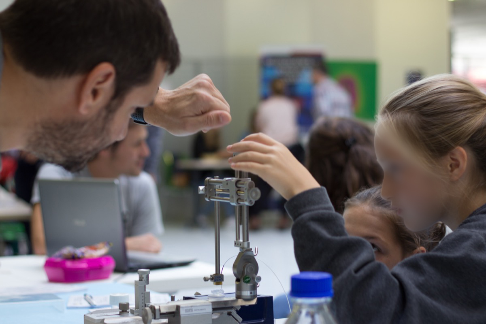
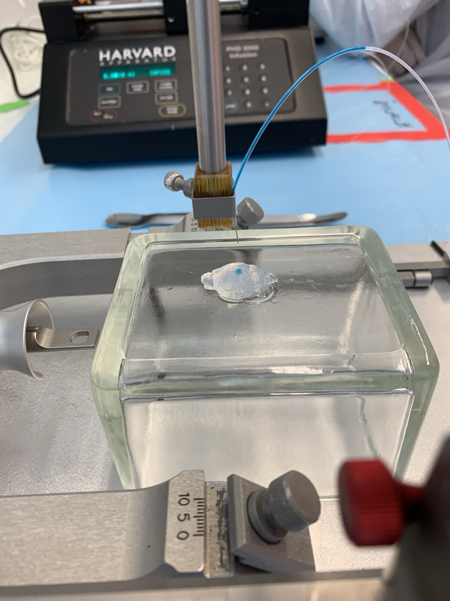
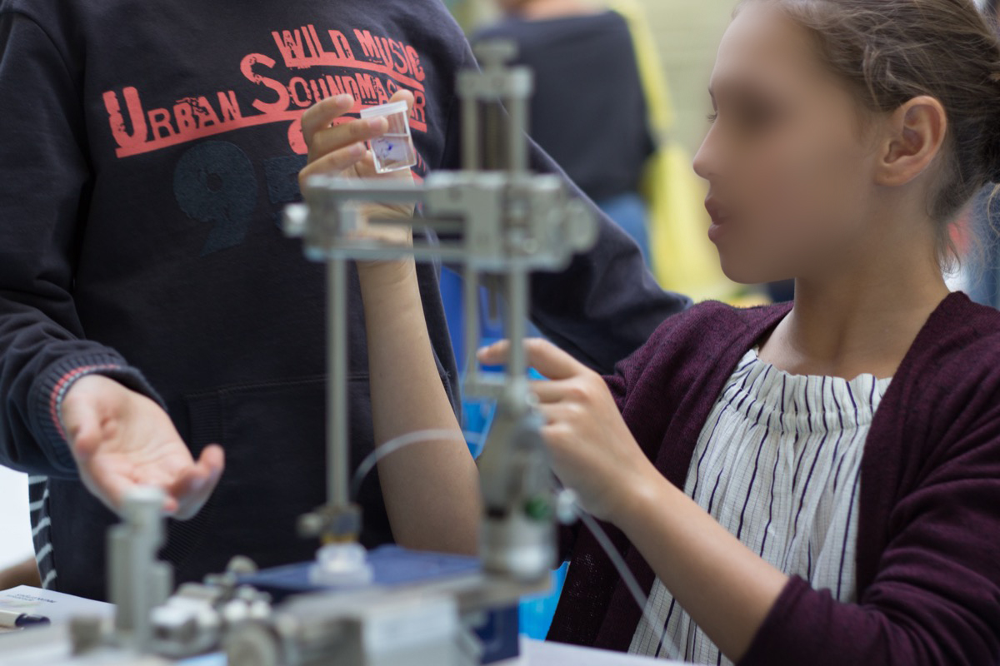
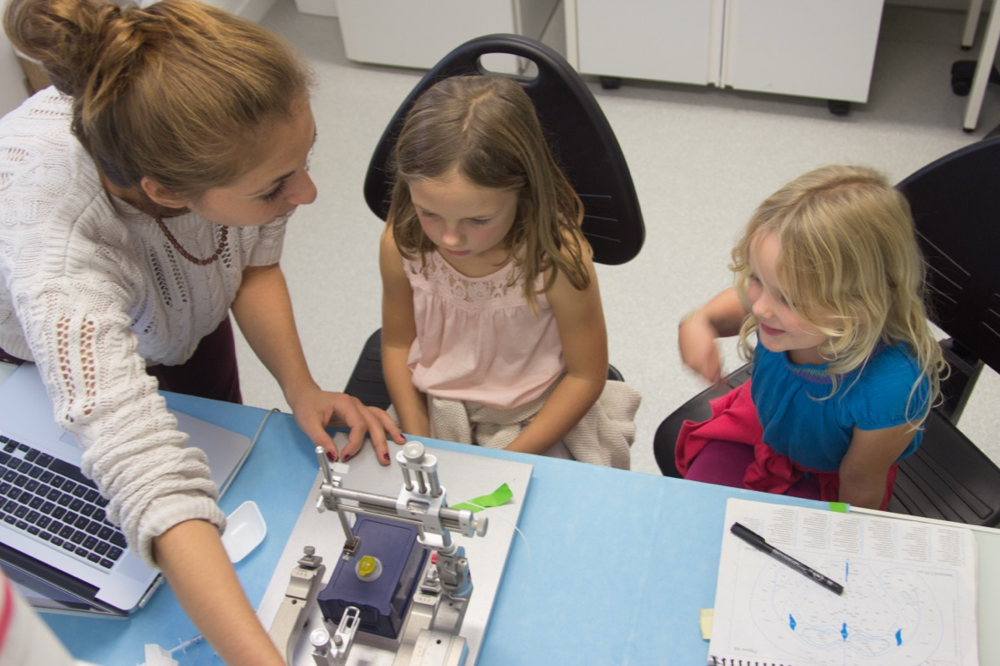
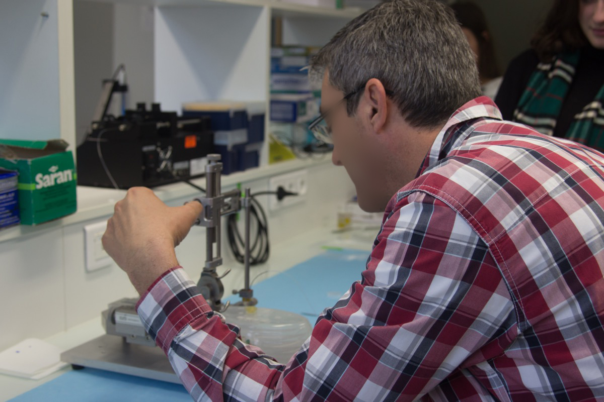
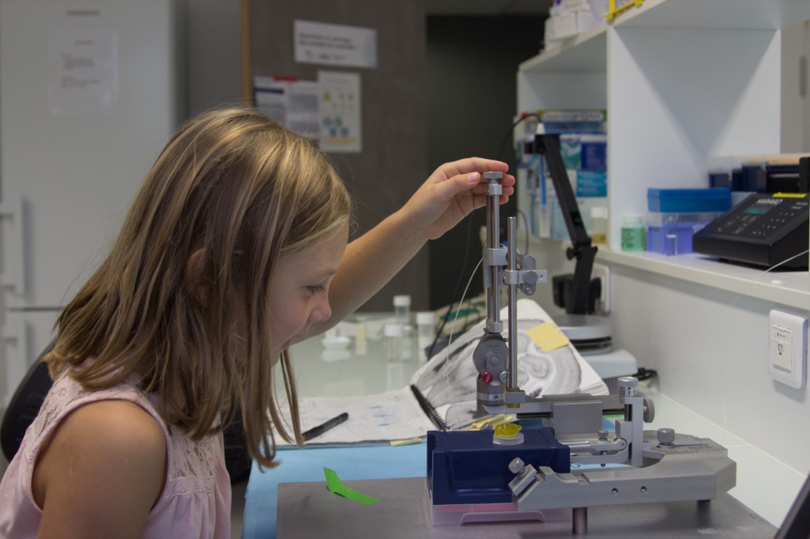
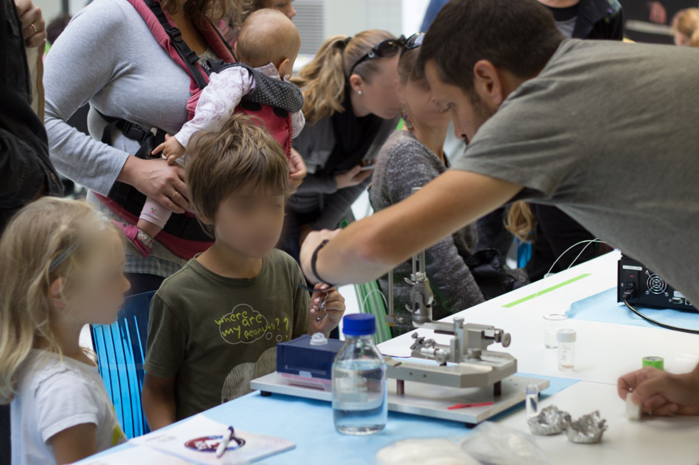
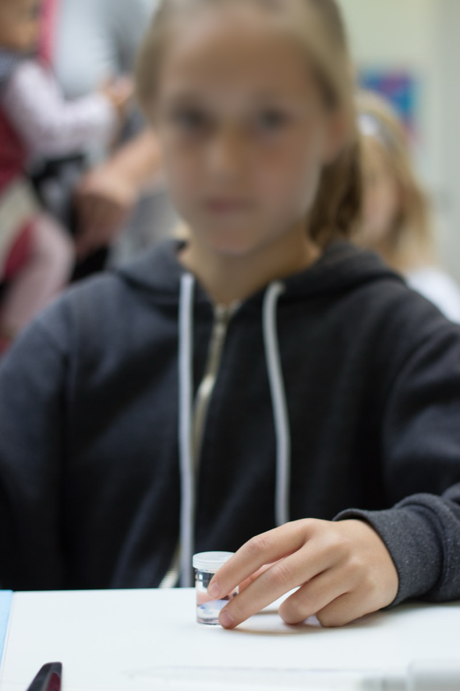
Une version portable de l'atelier a été conçue — cadre stéréotaxique miniature tout plastique, transportable en avion — et présentée par Evangelia Kyriakidou, doctorante de l'équipe, accompagnée de Davide Passaro et Alexandre Carrea, lors de Science is Wonderful! 2025, l'événement phare des Actions Marie Skłodowska-Curie de la Commission Européenne, au Musée de l'Afrique à Bruxelles.
A portable version of the workshop was designed — a miniature all-plastic stereotaxic frame, airline-transportable — and presented by Evangelia Kyriakidou, PhD student in the team, together with Davide Passaro and Alexandre Carrea, at Science is Wonderful! 2025, the flagship event of the Marie Skłodowska-Curie Actions, European Commission, at the Africa Museum in Brussels.
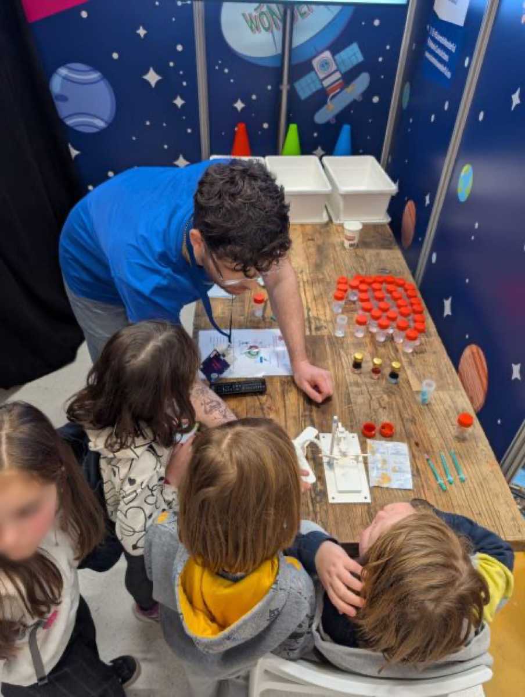
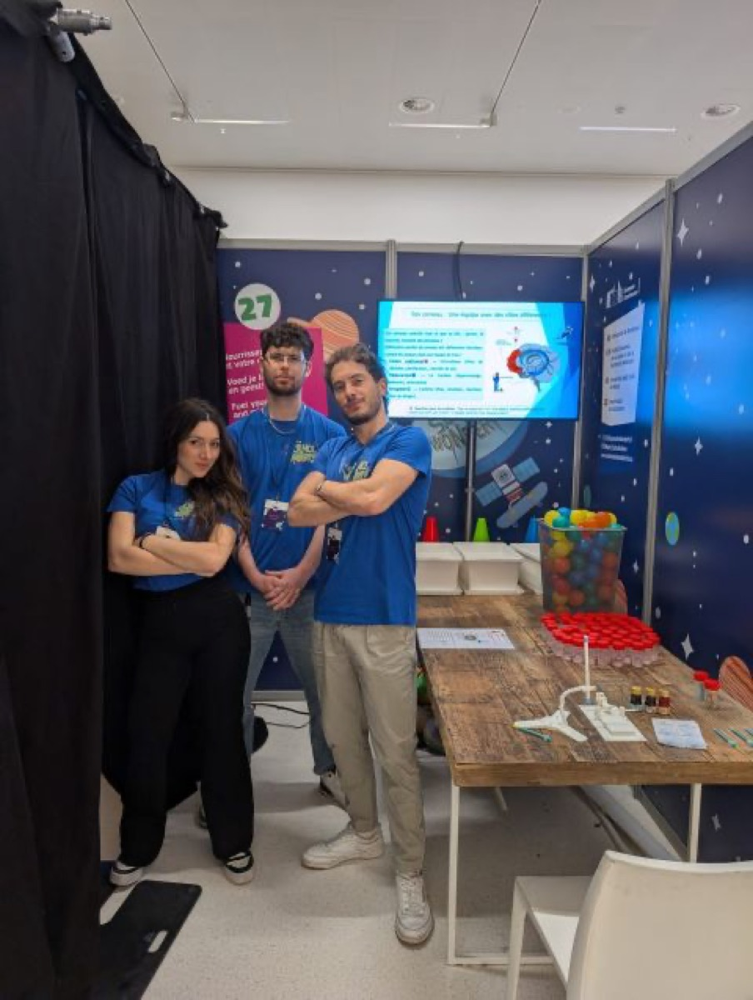
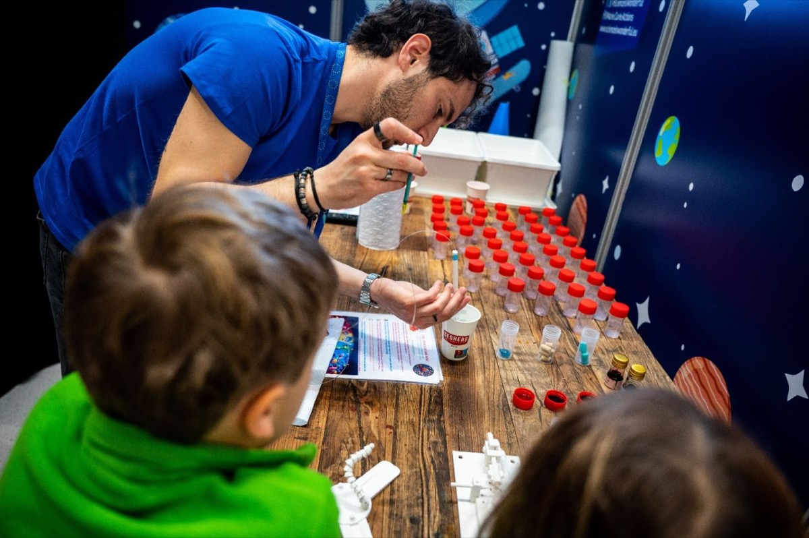
En labo, en médiathèque, en école, à Bruxelles — l'atelier REMPLACER va à la rencontre des publics les plus divers, dans le laboratoire comme hors les murs.
In the lab, in libraries, in schools, in Brussels — the REMPLACER workshop meets the most diverse audiences, both in the laboratory and beyond its walls.
🏛️ Fête de la Science · Destination Labo (Inserm) · Semaine du Cerveau (Société des Neurosciences) · Portes ouvertes · Médiathèques · Cap Sciences · Collèges · Lycées · Science is Wonderful! 2025 (MSCA, Bruxelles)
🏛️ Fête de la Science · Destination Labo (Inserm) · Brain Awareness Week (Société des Neurosciences) · Open days · Libraries · Cap Sciences · Schools · Science is Wonderful! 2025 (MSCA, Brussels)
Deux présentations utilisées lors d'événements de médiation scientifique, librement consultables.
Two presentations used at science outreach events, freely available.
Philippe ZIZZARI
Ingénieur de Recherche INSERM
Neurocentre Magendie — INSERM U1215
Université de Bordeaux
Équipe dirigée par Daniela COTA
Physiopathologie de l'équilibre énergétique et obésité
Philippe ZIZZARI
Research Engineer, INSERM
Neurocentre Magendie — INSERM U1215
University of Bordeaux
Team led by Daniela COTA
Pathophysiology of energy balance and obesity